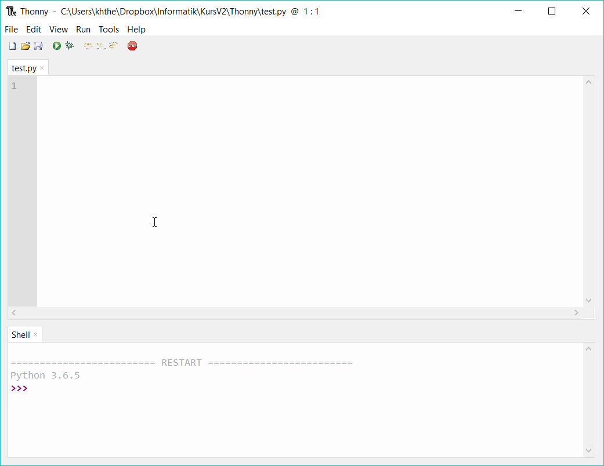

Eine Entwicklungsumgebung (IDE = integrated development environment) ist ein Programm, das beim Erstellen, Ausführen und Testen von Programmen hilft. Thonny ist eine Python IDE für Programmieranfänger.
Installiere Thonny. Durch die Installation wird eine Version von Python 3 mit installiert. Thonny öffnet sich mit einem Fenster für Programmcode und einer shell.
